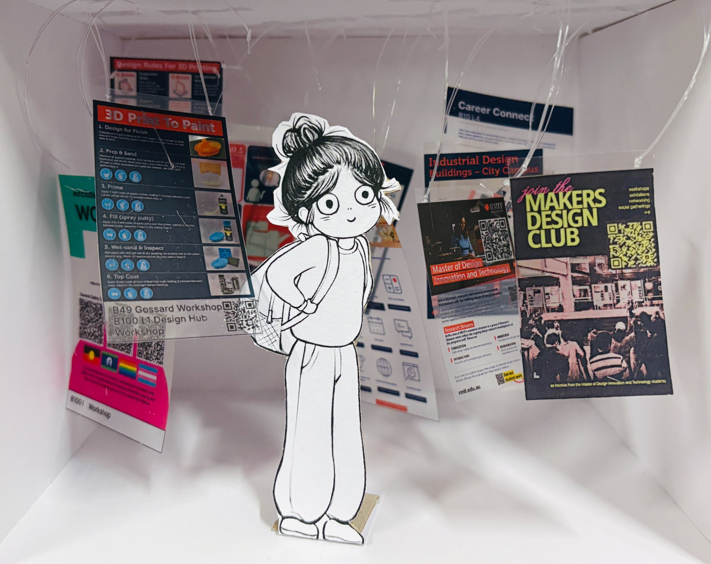

MDIT student archive / anonymous account
Master of Design Innovation and Technology · Archive 10
Someone
Before You…
A collection of real Studio moments, difficult decisions and lessons passed on by students who have been here before.
Open an archive. Explore a scenario, choose your response, or read the story someone left behind.

Filed for future students
Browse the archive
Collection 01 / Decision records
Scenarios & Responses
Step into a moment from the Studio journey. Listen, read, and decide what you would do.
Listen to the recorded scenario, or read it above.
Your decision
So I decided to…
Collection 02 / Personal records
Someone Before You…
Anonymous reflections from students who have faced similar challenges.